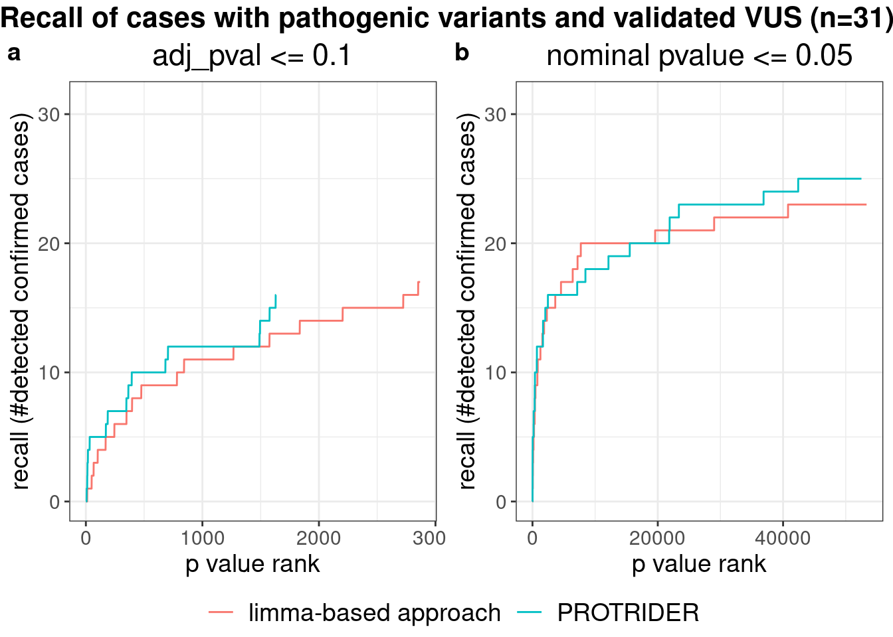
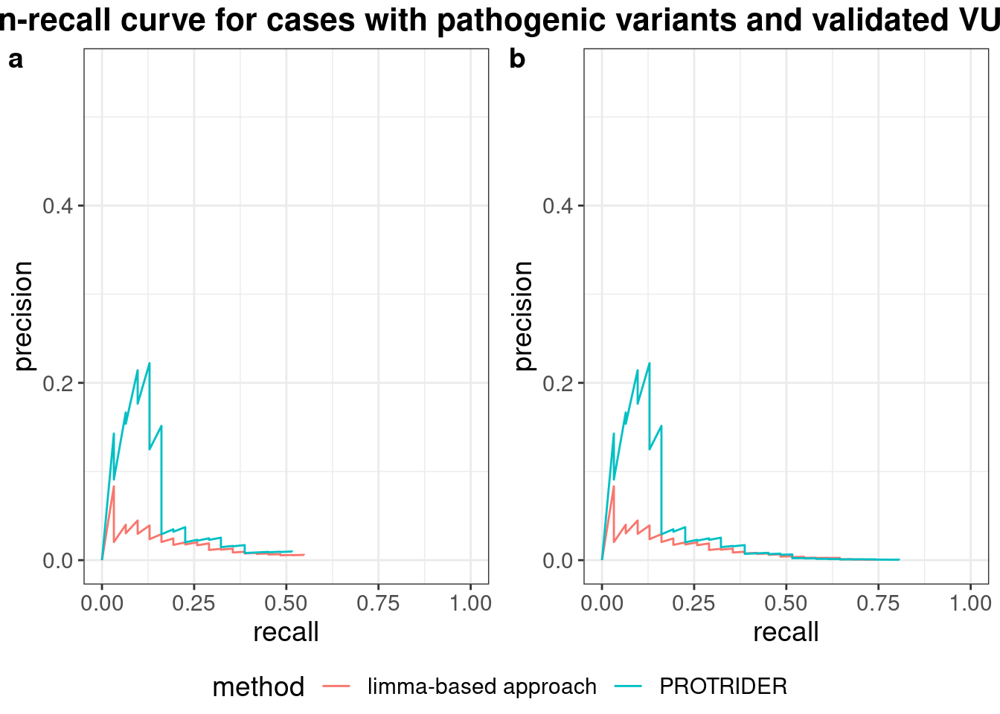
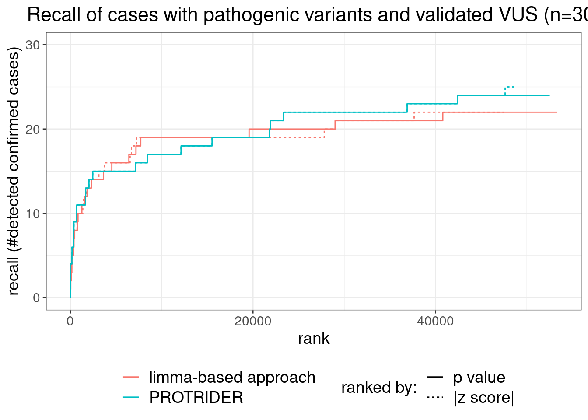
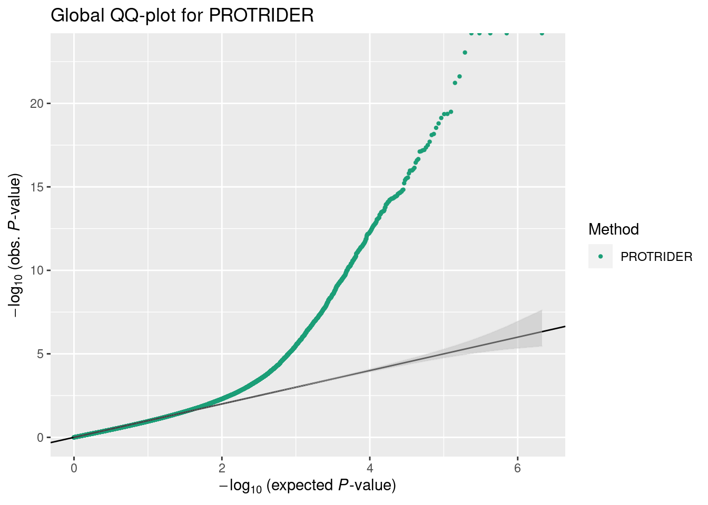
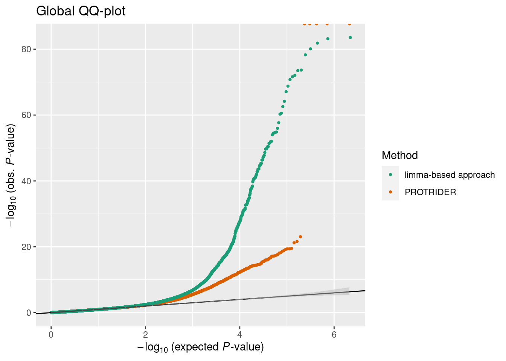

############################################
### plot limma - protrider benchmark
library(plyr)
library(dplyr)
library(data.table)
library(ggplot2)
library(ggpubr)
############################################
### read in protrider results
protrider_filename <- snakemake@input$protrider_results
protrider_pval_list <- as.data.table(readRDS(protrider_filename))
protrider_pval_list$sample_prot = paste0(protrider_pval_list$SAMPLE_ID,"_", protrider_pval_list$geneID)
### read in limma results
limma_filename <- snakemake@input$limma_results
limma_pval_list <- as.data.table(readRDS(limma_filename))
limma_pval_list$sample_prot = paste0(limma_pval_list$SAMPLE_ID,"_",limma_pval_list$geneID)
### keep only samples in both analyses, only if all whole limma list is considered
only_identical_samples <- intersect(limma_pval_list$sample_prot, protrider_pval_list$sample_prot)
pval_ae_pre <- subset(protrider_pval_list, sample_prot %in% only_identical_samples)
pval_limma_pre <- subset(limma_pval_list, sample_prot %in% only_identical_samples)
############################################
### get sample annotation
sa_prot <- fread(snakemake@input$sample_annotation)
sa_prot <- sa_prot[USE_FOR_PROTEOMICS_PAPER == T]
sa_prot$KNOWN_MUTATION <- toupper(sa_prot$KNOWN_MUTATION)
etp_m <- sa_prot[, c('SAMPLE_ID', 'KNOWN_MUTATION','CATEGORY')]
# sa = subset(etp_m, CATEGORY=="I")[,1:2] ### for only confirmed ones
# sa = subset(etp_m, CATEGORY %in% c("I", "IIa", "III"))[,1:2] ### for only confirmed ones
sa = subset(etp_m, CATEGORY %in% c("I", "IIa"))[,1:2] ### only cases with previous candidate
sa$confirmed_out = !is.na(sa$KNOWN_MUTATION)
sa$sample_prot = paste0(sa$SAMPLE_ID,"_",sa$KNOWN_MUTATION)
### merge known mutation to result lists
pval_ae_solved = join(pval_ae_pre,sa)
pval_ae_solved[is.na(confirmed_out), confirmed_out:=FALSE]
pval_ae_solved = pval_ae_solved[order(pval_ae_solved$PROTEIN_PVALUE),]
pval_ae_solved[, num_out_called:=cumsum(confirmed_out)]
pval_limma_solved = join(pval_limma_pre,sa)
pval_limma_solved$confirmed_out[is.na(pval_limma_solved$confirmed_out)] = FALSE
pval_limma_solved = pval_limma_solved[order(pval_limma_solved$PROTEIN_PVALUE),]
pval_limma_solved$num_out_called = cumsum(pval_limma_solved$confirmed_out)
############################################
### plotting
padj_cutoff = 0.1 #0.05
ae_plot = subset(pval_ae_solved, PROTEIN_PADJ <= padj_cutoff)
ae_plot$pvalue = log10(ae_plot$PROTEIN_PVALUE)
limma_plot = subset(pval_limma_solved, PROTEIN_PADJ <= padj_cutoff)
limma_plot$pvalue = log10(limma_plot$PROTEIN_PVALUE)
# # Recall plot from Stefan L.
# plot(1:nrow(ae_plot),ae_plot$num_out_called, 'l', lwd=2,
# col='orange', xlim=c(0,nrow(limma_plot)),
# ylim=c(0,max(max(ae_plot$num_out_called), max(limma_plot$num_out_called)) +2),
# ylab='recall (#detected confirmed cases)', xlab="p value rank", main=paste0('adj_pval: ',padj_cutoff,' outlier called') )
# lines(1:nrow(limma_plot),limma_plot$num_out_called, col='blue', lwd=2)
# legend('bottomright',
# legend=c(paste0('PROTRIDER [',max(ae_plot$num_out_called), ' in ',which.max(ae_plot$num_out_called),' / ' ,nrow(ae_plot),']') ,
# paste0('limma [',max(limma_plot$num_out_called), ' in ',which.max(limma_plot$num_out_called),' / ' ,nrow(limma_plot),']') ),
# col=c('orange','blue'), lty=1, lwd=10, title="method [confirmed cases]")
### same plot but as ggplot
ae_plot[, rank:=frank(PROTEIN_PVALUE, ties.method="min")]
ae_plot[, total:=.N]
ae_plot[, method:="PROTRIDER"]
limma_plot[, rank:=frank(PROTEIN_PVALUE, ties.method="min")]
limma_plot[, total:=.N]
limma_plot[, method:="limma-based approach"]
ae_limma_plot <- rbind(ae_plot[,.(pvalue, num_out_called, rank, total, method)],
limma_plot[,.(pvalue, num_out_called, rank, total, method)])
g <- ggplot(ae_limma_plot, aes(x=rank, y=num_out_called, col=method)) +
geom_line() +
scale_y_continuous(limits=c(0, nrow(sa)), breaks=seq(0, nrow(sa), by=10),
minor_breaks=seq(0, nrow(sa)-5, by=10)+5) +
xlab("p value rank") + ylab("recall (#detected confirmed cases)") +
ggtitle(paste0("adj_pval <= ", padj_cutoff)) +
theme_bw() +
theme(text=element_text(size=14), title=element_text(size=14),
legend.title=element_blank(), legend.position="bottom", # c(0.8, 0.15)
plot.title = element_text(hjust = 0.5), legend.text=element_text(size=14))
# g
#### precision recall plot
ae_plot[, `:=`(precision=num_out_called/rank, recall=num_out_called/nrow(sa))]
limma_plot[, `:=`(precision=num_out_called/rank, recall=num_out_called/nrow(sa))]
plot_dt <- rbind(ae_plot[,.(precision, recall, method)], limma_plot[,.(precision, recall, method)])
g_pr <- ggplot(plot_dt, aes(x=recall, y=precision, col=method)) + geom_line() +
scale_x_continuous(limits=c(0,1)) + scale_y_continuous(limits=c(0,0.55)) +
theme_bw() +
theme(text=element_text(size=14), title=element_text(size=14),
legend.position=c(0.8, 0.85))
# g_pr
### nominal p value cutoff
pval_cutoff = 0.05#0.1#0.05 #0.05 #1 #0.5#1# 0.05
ae_plot = subset(pval_ae_solved, PROTEIN_PVALUE <= pval_cutoff)
ae_plot$pvalue = log10(ae_plot$PROTEIN_PVALUE)
limma_plot = subset(pval_limma_solved, PROTEIN_PVALUE <= pval_cutoff)
limma_plot$pvalue = log10(limma_plot$PROTEIN_PVALUE)
ae_plot[, rank:=frank(PROTEIN_PVALUE, ties.method="min")]
ae_plot[, total:=.N]
ae_plot[, method:="PROTRIDER"]
limma_plot[, rank:=frank(PROTEIN_PVALUE, ties.method="min")]
limma_plot[, total:=.N]
limma_plot[, method:="limma-based approach"]
ae_limma_plot <- rbind(ae_plot[,.(pvalue, num_out_called, rank, total, method)],
limma_plot[,.(pvalue, num_out_called, rank, total, method)])
g_nominal <- ggplot(ae_limma_plot, aes(x=rank, y=num_out_called, col=method)) +
geom_line() +
scale_y_continuous(limits=c(0, nrow(sa)), breaks=seq(0, nrow(sa), by=10),
minor_breaks=seq(0, nrow(sa)-5, by=10)+5) +
xlab("p value rank") + ylab("recall (#detected confirmed cases)") +
ggtitle(paste0("nominal pvalue <= ", pval_cutoff)) +
theme_bw() +
theme(text=element_text(size=14), title=element_text(size=14),
legend.title=element_blank(), legend.position="bottom",
plot.title=element_text(hjust = 0.5), legend.text=element_text(size=14))
# g_nominal
### combine into one Figure: panel a) recall for pvals with padj < 0.1; panel b) recall for all nominal pval < 0.05
g_fig <- ggarrange(g, g_nominal, ncol=2, common.legend=TRUE, legend="bottom", labels=letters[1:2])
common_title <- paste0("Recall of cases with pathogenic variants and validated VUS (n=", nrow(sa), ")")
g_fig <- annotate_figure(g_fig, top = text_grob(common_title, face = "bold", size = 16))
g_fig

figure_file <- snakemake@output$fig
ggsave(figure_file, g_fig, width=15, height=5)
# saveRDS(list("g_padj"=g, "g_nominal"=g_nominal), file.path(dirname(figure_file), "protrider_limma_figS5.rds"))
#### precision recall plot (nominal pvalue cutoff)
ae_plot[, `:=`(precision=num_out_called/rank, recall=num_out_called/nrow(sa))]
limma_plot[, `:=`(precision=num_out_called/rank, recall=num_out_called/nrow(sa))]
plot_dt <- rbind(ae_plot[,.(precision, recall, method)], limma_plot[,.(precision, recall, method)])
g_pr_nom <- ggplot(plot_dt, aes(x=recall, y=precision, col=method)) + geom_line() +
scale_x_continuous(limits=c(0,1)) + scale_y_continuous(limits=c(0,0.55)) +
theme_bw() +
theme(text=element_text(size=14), title=element_text(size=14),
legend.title=element_blank(), legend.position="bottom",
plot.title=element_text(hjust = 0.5), legend.text=element_text(size=14))
# g_pr_nom
# TODO only one plot needed, add the different pvalue cutoffs as shapes
g_pr_fig <- ggarrange(g_pr, g_pr_nom, ncol=2, common.legend=TRUE, legend="bottom", labels=letters[1:2])
pr_common_title <- paste0("Precision-recall curve for cases with pathogenic variants and validated VUS (n=", nrow(sa), ")")
g_pr_fig <- annotate_figure(g_pr_fig, top = text_grob(pr_common_title, face = "bold", size = 16))
g_pr_fig

#### plot with both pvalue and z-score cutoffs
pval_cutoff <- 0.05
zscore_cutoff <- 2
ae_plot_pval <- subset(pval_ae_solved, PROTEIN_PVALUE <= pval_cutoff)
ae_plot_pval$score <- log10(ae_plot_pval$PROTEIN_PVALUE)
ae_plot_pval[,method:="PROTRIDER"]
ae_plot_pval[,rankedBy:="p value"]
ae_plot_z <- subset(pval_ae_solved, abs(PROTEIN_ZSCORE) >= zscore_cutoff)
ae_plot_z$score <- -abs(ae_plot_z$PROTEIN_ZSCORE)
ae_plot_z = ae_plot_z[order(-abs(ae_plot_z$PROTEIN_ZSCORE)),]
ae_plot_z[, num_out_called:=cumsum(confirmed_out)]
ae_plot_z[,method:="PROTRIDER"]
ae_plot_z[,rankedBy:="|z score|"]
limma_plot_pval <- subset(pval_limma_solved, PROTEIN_PVALUE <= pval_cutoff)
limma_plot_pval$score <- log10(limma_plot_pval$PROTEIN_PVALUE)
limma_plot_pval[,method:="limma-based approach"]
limma_plot_pval[,rankedBy:="p value"]
limma_plot_z <- subset(pval_limma_solved, abs(PROTEIN_ZSCORE) >= zscore_cutoff)
limma_plot_z$score <- -abs(limma_plot_z$PROTEIN_ZSCORE)
limma_plot_z = limma_plot_z[order(-abs(limma_plot_z$PROTEIN_ZSCORE)),]
limma_plot_z[, num_out_called:=cumsum(confirmed_out)]
limma_plot_z[,method:="limma-based approach"]
limma_plot_z[,rankedBy:="|z score|"]
plot_dt <- rbind(ae_plot_pval[,.(score, num_out_called, method, rankedBy)],
ae_plot_z[,.(score, num_out_called, method, rankedBy)],
limma_plot_pval[,.(score, num_out_called, method, rankedBy)],
limma_plot_z[,.(score, num_out_called, method, rankedBy)])
plot_dt[, rank:=frank(score, ties.method="min"), by="method,rankedBy"]
plot_dt[, total:=.N, by="method,rankedBy"]
plot_dt
## # A tibble: 201,913 x 6
## score num_out_called method rankedBy rank total
## <dbl> <int> <chr> <chr> <int> <int>
## 1 -Inf 0 PROTRIDER p value 1 52508
## 2 -Inf 0 PROTRIDER p value 1 52508
## 3 -Inf 0 PROTRIDER p value 1 52508
## 4 -Inf 0 PROTRIDER p value 1 52508
## 5 -Inf 0 PROTRIDER p value 1 52508
## 6 -23.0 0 PROTRIDER p value 6 52508
## 7 -21.6 1 PROTRIDER p value 7 52508
## 8 -21.2 1 PROTRIDER p value 8 52508
## 9 -19.5 1 PROTRIDER p value 9 52508
## 10 -19.4 1 PROTRIDER p value 10 52508
## # … with 201,903 more rows
plot_dt[,rankedBy:=factor(rankedBy, levels=c("p value", "|z score|"))]
# additional fig: recall for all nominal pval < 0.05 + |z-score| > 2
log <- FALSE
# log <- TRUE
g_z <- ggplot(plot_dt, aes(x=rank, y=num_out_called, col=method, linetype=rankedBy)) +
geom_line() +
scale_y_continuous(limits=c(0, nrow(sa)), breaks=seq(0, nrow(sa), by=10),
minor_breaks=seq(0, nrow(sa)-5, by=10)+5) +
xlab("rank") + ylab("recall (#detected confirmed cases)") +
ggtitle(paste0("Recall of cases with pathogenic variants and validated VUS (n=", nrow(sa), ")")) +
theme_bw() +
theme(text=element_text(size=14), title=element_text(size=14),
legend.position="bottom", legend.box="horizontal", legend.direction="vertical",
plot.title=element_text(hjust = 0.5), legend.text=element_text(size=14)) +
guides(color = guide_legend(title.position="left", order=1, title.theme=element_blank()),
linetype=guide_legend("ranked by:", title.position="left", order=2))
if(log) g_z <- g_z + scale_x_log10()
g_z

#### PROTRIDER global qq-plot
# code slightly adjusted from https://github.com/gagneurlab/OUTRIDER-analysis/blob/master/Scripts/PaperPlots/Figure3_global_qq_res.R
getQQPlottingData <- function(pval_list, method_name, conf.alpha=0.05){
qqPlotDT <- data.table(observedPvalue=pval_list[,PROTEIN_PVALUE],
aberrant=pval_list[,PROTEIN_outlier],
Method=method_name)
qqPlotDT <- qqPlotDT[order(observedPvalue)]
qqPlotDT[,expectedPvalue:= ppoints(observedPvalue), by=Method]
# set confidence
qqPlotDT[,nlupper:=-log10(qbeta( conf.alpha/2, 1:.N, .N:1)), by=Method]
qqPlotDT[,nllower:=-log10(qbeta(1-conf.alpha/2, 1:.N, .N:1)), by=Method]
## sample to avoid plotting problems.
qqPlotDTSampled <- qqPlotDT[
observedPvalue < 1E-3 |
observedPvalue < 1E-2 & sample(c(TRUE, FALSE), nrow(qqPlotDT), prob = c(0.1, 0.9), replace = TRUE)|
observedPvalue >= 1E-2 & sample(c(TRUE, FALSE), nrow(qqPlotDT), prob = c(0.01, 0.99), replace = TRUE)]
qqPlotDTSampled[,neglog10expectedPvalue := -log10(expectedPvalue)]
qqPlotDTSampled[,neglog10observedPvalue := -log10(observedPvalue)]
return(qqPlotDTSampled)
}
zoomtheme <- theme(legend.position="none", axis.title.x=element_blank(),
axis.title.y=element_blank(), title = element_blank(),
panel.grid.major = element_blank(), panel.grid.minor = element_blank(),
panel.background = element_rect(color='white', fill="white"),
plot.background = element_rect(color='white', fill = "white"),
plot.margin = unit(c(0,0,-6,-6),"mm"))
plotFigureQQ <- function(dt, dataset, withInlet=TRUE, range=c(0.5, 3.5, 17, 37)){
sdt <- dt[, .(nle=neglog10expectedPvalue, nlo=neglog10observedPvalue, Method=Method, nllow=nllower, nlup=nlupper)]
ggp <- ggplot(sdt, aes(nle, nlo, col=Method)) +
geom_point(size=0.8) +
scale_color_brewer(palette='Dark2') +
geom_abline(intercept = 0, slope = 1) +
labs(title = paste(dataset),
x=expression(paste(-log[10], " (expected ", italic(P), "-value)")),
y=expression(paste(-log[10], " (obs. ", italic(P), "-value)"))) +
geom_ribbon(data=sdt[Method=='PROTRIDER'], col=alpha('gray', 0.2), fill=alpha('gray', 0.5),
aes(x=nle, ymin = nllow, ymax = nlup))
if(isTRUE(withInlet)){
ggZoom <- ggplotGrob(
ggp + coord_cartesian(xlim=c(2, 3.5), ylim=c(2, 7)) + zoomtheme)
ggp <- ggp + annotation_custom(grob=ggZoom, xmin=range[1], xmax=range[2],
ymin=range[3], ymax=range[4])
}
ggp
}
# global qq plot for PROTRIDER
plotdt <- getQQPlottingData(protrider_pval_list, method_name='PROTRIDER')
ggQQ <- plotFigureQQ(plotdt, 'Global QQ-plot for PROTRIDER', withInlet=FALSE)
ggQQ

# global qq plot for both PROTRIDER and limma
plotdt_limma <- getQQPlottingData(limma_pval_list, method_name='limma-based approach')
plotdt_both <- rbind(plotdt, plotdt_limma)
ggQQ_both <- plotFigureQQ(plotdt_both, 'Global QQ-plot', withInlet=FALSE)
ggQQ_both

IyctLS0KIycgdGl0bGU6IFBST1RSSURFUiBjb21wYXJpc29uIHRvIGxpbW1hLWJhc2VkIGFwcHJvYWNoICAgCiMnIGF1dGhvcjogc2NoZWxsZXIsIGxvaXBmaW5nZXIKIycgd2I6CiMnICBpbnB1dDoKIycgIC0gcHJvdHJpZGVyX3Jlc3VsdHM6ICdgc20gY29uZmlnWyJQUk9DX0RBVEEiXSArICIvcHJvdHJpZGVyL1BST1RSSURFUl9yZXN1bHRzLnJkcyJgJwojJyAgLSBsaW1tYV9yZXN1bHRzOiAnYHNtIGNvbmZpZ1siUFJPQ19EQVRBIl0gKyAiL2xpbW1hL0xJTU1BX3Jlc3VsdHMucmRzImAnCiMnICAtIHNhbXBsZV9hbm5vdGF0aW9uOiAnYHNtIGNvbmZpZ1siQU5OT1RBVElPTiJdYCcKIycgIG91dHB1dDoKIycgIC0gZmlnOiAnYHNtIGNvbmZpZ1siRklHVVJFX0RJUiJdICsgIi9TdXBwbGVtZW50YXJ5X2ZpZ3VyZXMvU19GaWc1LnBkZiJgJwojJyBvdXRwdXQ6IAojJyAgIGh0bWxfZG9jdW1lbnQ6CiMnICAgIGNvZGVfZm9sZGluZzogaGlkZQojJyAgICBjb2RlX2Rvd25sb2FkOiBUUlVFCiMnLS0tCgojIyMjIyMjIyMjIyMjIyMjIyMjIyMjIyMjIyMjIyMjIyMjIyMjIyMjIyMjIwojIyMgcGxvdCBsaW1tYSAtIHByb3RyaWRlciBiZW5jaG1hcmsKCmxpYnJhcnkocGx5cikKbGlicmFyeShkcGx5cikKbGlicmFyeShkYXRhLnRhYmxlKQpsaWJyYXJ5KGdncGxvdDIpCmxpYnJhcnkoZ2dwdWJyKQoKIyMjIyMjIyMjIyMjIyMjIyMjIyMjIyMjIyMjIyMjIyMjIyMjIyMjIyMjIyMKIyMjIHJlYWQgaW4gcHJvdHJpZGVyIHJlc3VsdHMKcHJvdHJpZGVyX2ZpbGVuYW1lIDwtIHNuYWtlbWFrZUBpbnB1dCRwcm90cmlkZXJfcmVzdWx0cwpwcm90cmlkZXJfcHZhbF9saXN0IDwtIGFzLmRhdGEudGFibGUocmVhZFJEUyhwcm90cmlkZXJfZmlsZW5hbWUpKQpwcm90cmlkZXJfcHZhbF9saXN0JHNhbXBsZV9wcm90ID0gcGFzdGUwKHByb3RyaWRlcl9wdmFsX2xpc3QkU0FNUExFX0lELCJfIiwgcHJvdHJpZGVyX3B2YWxfbGlzdCRnZW5lSUQpCgojIyMgcmVhZCBpbiBsaW1tYSByZXN1bHRzCmxpbW1hX2ZpbGVuYW1lIDwtIHNuYWtlbWFrZUBpbnB1dCRsaW1tYV9yZXN1bHRzCmxpbW1hX3B2YWxfbGlzdCA8LSBhcy5kYXRhLnRhYmxlKHJlYWRSRFMobGltbWFfZmlsZW5hbWUpKQpsaW1tYV9wdmFsX2xpc3Qkc2FtcGxlX3Byb3QgPSBwYXN0ZTAobGltbWFfcHZhbF9saXN0JFNBTVBMRV9JRCwiXyIsbGltbWFfcHZhbF9saXN0JGdlbmVJRCkKCiMjIyBrZWVwIG9ubHkgc2FtcGxlcyBpbiBib3RoIGFuYWx5c2VzLCBvbmx5IGlmIGFsbCB3aG9sZSBsaW1tYSBsaXN0IGlzIGNvbnNpZGVyZWQKb25seV9pZGVudGljYWxfc2FtcGxlcyA8LSBpbnRlcnNlY3QobGltbWFfcHZhbF9saXN0JHNhbXBsZV9wcm90LCBwcm90cmlkZXJfcHZhbF9saXN0JHNhbXBsZV9wcm90KQpwdmFsX2FlX3ByZSA8LSBzdWJzZXQocHJvdHJpZGVyX3B2YWxfbGlzdCwgc2FtcGxlX3Byb3QgJWluJSBvbmx5X2lkZW50aWNhbF9zYW1wbGVzKQpwdmFsX2xpbW1hX3ByZSA8LSBzdWJzZXQobGltbWFfcHZhbF9saXN0LCBzYW1wbGVfcHJvdCAlaW4lIG9ubHlfaWRlbnRpY2FsX3NhbXBsZXMpCgoKIyMjIyMjIyMjIyMjIyMjIyMjIyMjIyMjIyMjIyMjIyMjIyMjIyMjIyMjIyMKIyMjIGdldCBzYW1wbGUgYW5ub3RhdGlvbgpzYV9wcm90IDwtIGZyZWFkKHNuYWtlbWFrZUBpbnB1dCRzYW1wbGVfYW5ub3RhdGlvbikKc2FfcHJvdCA8LSBzYV9wcm90W1VTRV9GT1JfUFJPVEVPTUlDU19QQVBFUiA9PSBUXQpzYV9wcm90JEtOT1dOX01VVEFUSU9OIDwtIHRvdXBwZXIoc2FfcHJvdCRLTk9XTl9NVVRBVElPTikKZXRwX20gPC0gc2FfcHJvdFssIGMoJ1NBTVBMRV9JRCcsICdLTk9XTl9NVVRBVElPTicsJ0NBVEVHT1JZJyldCgojIHNhID0gc3Vic2V0KGV0cF9tLCBDQVRFR09SWT09IkkiKVssMToyXSAgICMjIyBmb3Igb25seSBjb25maXJtZWQgb25lcwojIHNhID0gc3Vic2V0KGV0cF9tLCBDQVRFR09SWSAlaW4lIGMoIkkiLCAiSUlhIiwgIklJSSIpKVssMToyXSAgICMjIyBmb3Igb25seSBjb25maXJtZWQgb25lcwpzYSA9IHN1YnNldChldHBfbSwgQ0FURUdPUlkgJWluJSBjKCJJIiwgIklJYSIpKVssMToyXSAjIyMgb25seSBjYXNlcyB3aXRoIHByZXZpb3VzIGNhbmRpZGF0ZQpzYSRjb25maXJtZWRfb3V0ID0gIWlzLm5hKHNhJEtOT1dOX01VVEFUSU9OKQpzYSRzYW1wbGVfcHJvdCA9IHBhc3RlMChzYSRTQU1QTEVfSUQsIl8iLHNhJEtOT1dOX01VVEFUSU9OKQoKIyMjIG1lcmdlIGtub3duIG11dGF0aW9uIHRvIHJlc3VsdCBsaXN0cwpwdmFsX2FlX3NvbHZlZCA9IGpvaW4ocHZhbF9hZV9wcmUsc2EpCnB2YWxfYWVfc29sdmVkW2lzLm5hKGNvbmZpcm1lZF9vdXQpLCBjb25maXJtZWRfb3V0Oj1GQUxTRV0KcHZhbF9hZV9zb2x2ZWQgPSBwdmFsX2FlX3NvbHZlZFtvcmRlcihwdmFsX2FlX3NvbHZlZCRQUk9URUlOX1BWQUxVRSksXQpwdmFsX2FlX3NvbHZlZFssIG51bV9vdXRfY2FsbGVkOj1jdW1zdW0oY29uZmlybWVkX291dCldCgpwdmFsX2xpbW1hX3NvbHZlZCA9IGpvaW4ocHZhbF9saW1tYV9wcmUsc2EpCnB2YWxfbGltbWFfc29sdmVkJGNvbmZpcm1lZF9vdXRbaXMubmEocHZhbF9saW1tYV9zb2x2ZWQkY29uZmlybWVkX291dCldID0gRkFMU0UKcHZhbF9saW1tYV9zb2x2ZWQgPSBwdmFsX2xpbW1hX3NvbHZlZFtvcmRlcihwdmFsX2xpbW1hX3NvbHZlZCRQUk9URUlOX1BWQUxVRSksXQpwdmFsX2xpbW1hX3NvbHZlZCRudW1fb3V0X2NhbGxlZCA9IGN1bXN1bShwdmFsX2xpbW1hX3NvbHZlZCRjb25maXJtZWRfb3V0KQoKCiMjIyMjIyMjIyMjIyMjIyMjIyMjIyMjIyMjIyMjIyMjIyMjIyMjIyMjIyMjCiMjIyBwbG90dGluZwpwYWRqX2N1dG9mZiA9IDAuMSAjMC4wNSAKYWVfcGxvdCA9IHN1YnNldChwdmFsX2FlX3NvbHZlZCwgUFJPVEVJTl9QQURKIDw9IHBhZGpfY3V0b2ZmKQphZV9wbG90JHB2YWx1ZSA9IGxvZzEwKGFlX3Bsb3QkUFJPVEVJTl9QVkFMVUUpCmxpbW1hX3Bsb3QgPSBzdWJzZXQocHZhbF9saW1tYV9zb2x2ZWQsIFBST1RFSU5fUEFESiA8PSBwYWRqX2N1dG9mZikKbGltbWFfcGxvdCRwdmFsdWUgPSBsb2cxMChsaW1tYV9wbG90JFBST1RFSU5fUFZBTFVFKQoKIyAjIFJlY2FsbCBwbG90IGZyb20gU3RlZmFuIEwuCiMgcGxvdCgxOm5yb3coYWVfcGxvdCksYWVfcGxvdCRudW1fb3V0X2NhbGxlZCwgJ2wnLCAgbHdkPTIsCiMgICAgICBjb2w9J29yYW5nZScsIHhsaW09YygwLG5yb3cobGltbWFfcGxvdCkpLAojICAgICAgeWxpbT1jKDAsbWF4KG1heChhZV9wbG90JG51bV9vdXRfY2FsbGVkKSwgbWF4KGxpbW1hX3Bsb3QkbnVtX291dF9jYWxsZWQpKSArMiksCiMgICAgICB5bGFiPSdyZWNhbGwgKCNkZXRlY3RlZCBjb25maXJtZWQgY2FzZXMpJywgeGxhYj0icCB2YWx1ZSByYW5rIiwgbWFpbj1wYXN0ZTAoJ2Fkal9wdmFsOiAnLHBhZGpfY3V0b2ZmLCcgb3V0bGllciBjYWxsZWQnKSApCiMgbGluZXMoMTpucm93KGxpbW1hX3Bsb3QpLGxpbW1hX3Bsb3QkbnVtX291dF9jYWxsZWQsIGNvbD0nYmx1ZScsIGx3ZD0yKQojIGxlZ2VuZCgnYm90dG9tcmlnaHQnLAojICAgICAgICBsZWdlbmQ9YyhwYXN0ZTAoJ1BST1RSSURFUiBbJyxtYXgoYWVfcGxvdCRudW1fb3V0X2NhbGxlZCksICcgaW4gJyx3aGljaC5tYXgoYWVfcGxvdCRudW1fb3V0X2NhbGxlZCksJyAvICcgLG5yb3coYWVfcGxvdCksJ10nKSAsCiMgICAgICAgICAgICAgICAgIHBhc3RlMCgnbGltbWEgWycsbWF4KGxpbW1hX3Bsb3QkbnVtX291dF9jYWxsZWQpLCAnIGluICcsd2hpY2gubWF4KGxpbW1hX3Bsb3QkbnVtX291dF9jYWxsZWQpLCcgLyAnICxucm93KGxpbW1hX3Bsb3QpLCddJykgKSwKIyAgICAgICAgY29sPWMoJ29yYW5nZScsJ2JsdWUnKSwgbHR5PTEsIGx3ZD0xMCwgdGl0bGU9Im1ldGhvZCBbY29uZmlybWVkIGNhc2VzXSIpCgojIyMgc2FtZSBwbG90IGJ1dCBhcyBnZ3Bsb3QKYWVfcGxvdFssIHJhbms6PWZyYW5rKFBST1RFSU5fUFZBTFVFLCB0aWVzLm1ldGhvZD0ibWluIildCmFlX3Bsb3RbLCB0b3RhbDo9Lk5dCmFlX3Bsb3RbLCBtZXRob2Q6PSJQUk9UUklERVIiXQpsaW1tYV9wbG90WywgcmFuazo9ZnJhbmsoUFJPVEVJTl9QVkFMVUUsIHRpZXMubWV0aG9kPSJtaW4iKV0KbGltbWFfcGxvdFssIHRvdGFsOj0uTl0KbGltbWFfcGxvdFssIG1ldGhvZDo9ImxpbW1hLWJhc2VkIGFwcHJvYWNoIl0KCmFlX2xpbW1hX3Bsb3QgPC0gcmJpbmQoYWVfcGxvdFssLihwdmFsdWUsIG51bV9vdXRfY2FsbGVkLCByYW5rLCB0b3RhbCwgbWV0aG9kKV0sIAogICAgICAgICAgICAgICAgICAgICAgIGxpbW1hX3Bsb3RbLC4ocHZhbHVlLCBudW1fb3V0X2NhbGxlZCwgcmFuaywgdG90YWwsIG1ldGhvZCldKQpnIDwtIGdncGxvdChhZV9saW1tYV9wbG90LCBhZXMoeD1yYW5rLCB5PW51bV9vdXRfY2FsbGVkLCBjb2w9bWV0aG9kKSkgKwogICAgZ2VvbV9saW5lKCkgKwogICAgc2NhbGVfeV9jb250aW51b3VzKGxpbWl0cz1jKDAsIG5yb3coc2EpKSwgYnJlYWtzPXNlcSgwLCBucm93KHNhKSwgYnk9MTApLAogICAgICAgICAgICAgICAgICAgICAgIG1pbm9yX2JyZWFrcz1zZXEoMCwgbnJvdyhzYSktNSwgYnk9MTApKzUpICsKICAgIHhsYWIoInAgdmFsdWUgcmFuayIpICsgeWxhYigicmVjYWxsICgjZGV0ZWN0ZWQgY29uZmlybWVkIGNhc2VzKSIpICsgCiAgICBnZ3RpdGxlKHBhc3RlMCgiYWRqX3B2YWwgPD0gIiwgcGFkal9jdXRvZmYpKSArCiAgICB0aGVtZV9idygpICsKICAgIHRoZW1lKHRleHQ9ZWxlbWVudF90ZXh0KHNpemU9MTQpLCB0aXRsZT1lbGVtZW50X3RleHQoc2l6ZT0xNCksCiAgICAgICAgICBsZWdlbmQudGl0bGU9ZWxlbWVudF9ibGFuaygpLCBsZWdlbmQucG9zaXRpb249ImJvdHRvbSIsICAjIGMoMC44LCAwLjE1KQogICAgICAgICAgcGxvdC50aXRsZSA9IGVsZW1lbnRfdGV4dChoanVzdCA9IDAuNSksIGxlZ2VuZC50ZXh0PWVsZW1lbnRfdGV4dChzaXplPTE0KSkKIyBnCgojIyMjIHByZWNpc2lvbiByZWNhbGwgcGxvdAphZV9wbG90WywgYDo9YChwcmVjaXNpb249bnVtX291dF9jYWxsZWQvcmFuaywgcmVjYWxsPW51bV9vdXRfY2FsbGVkL25yb3coc2EpKV0KbGltbWFfcGxvdFssIGA6PWAocHJlY2lzaW9uPW51bV9vdXRfY2FsbGVkL3JhbmssIHJlY2FsbD1udW1fb3V0X2NhbGxlZC9ucm93KHNhKSldCgpwbG90X2R0IDwtIHJiaW5kKGFlX3Bsb3RbLC4ocHJlY2lzaW9uLCByZWNhbGwsIG1ldGhvZCldLCBsaW1tYV9wbG90WywuKHByZWNpc2lvbiwgcmVjYWxsLCBtZXRob2QpXSkKCgpnX3ByIDwtIGdncGxvdChwbG90X2R0LCBhZXMoeD1yZWNhbGwsIHk9cHJlY2lzaW9uLCBjb2w9bWV0aG9kKSkgKyBnZW9tX2xpbmUoKSArIAogICAgc2NhbGVfeF9jb250aW51b3VzKGxpbWl0cz1jKDAsMSkpICsgc2NhbGVfeV9jb250aW51b3VzKGxpbWl0cz1jKDAsMC41NSkpICsKICAgIHRoZW1lX2J3KCkgKwogICAgdGhlbWUodGV4dD1lbGVtZW50X3RleHQoc2l6ZT0xNCksIHRpdGxlPWVsZW1lbnRfdGV4dChzaXplPTE0KSwKICAgICAgICAgIGxlZ2VuZC5wb3NpdGlvbj1jKDAuOCwgMC44NSkpCiMgZ19wcgoKCiMjIyBub21pbmFsIHAgdmFsdWUgY3V0b2ZmCnB2YWxfY3V0b2ZmID0gMC4wNSMwLjEjMC4wNSAjMC4wNSAjMSAjMC41IzEjIDAuMDUKYWVfcGxvdCA9IHN1YnNldChwdmFsX2FlX3NvbHZlZCwgUFJPVEVJTl9QVkFMVUUgPD0gcHZhbF9jdXRvZmYpCmFlX3Bsb3QkcHZhbHVlID0gbG9nMTAoYWVfcGxvdCRQUk9URUlOX1BWQUxVRSkKbGltbWFfcGxvdCA9IHN1YnNldChwdmFsX2xpbW1hX3NvbHZlZCwgUFJPVEVJTl9QVkFMVUUgPD0gcHZhbF9jdXRvZmYpCmxpbW1hX3Bsb3QkcHZhbHVlID0gbG9nMTAobGltbWFfcGxvdCRQUk9URUlOX1BWQUxVRSkKCmFlX3Bsb3RbLCByYW5rOj1mcmFuayhQUk9URUlOX1BWQUxVRSwgdGllcy5tZXRob2Q9Im1pbiIpXQphZV9wbG90WywgdG90YWw6PS5OXQphZV9wbG90WywgbWV0aG9kOj0iUFJPVFJJREVSIl0KbGltbWFfcGxvdFssIHJhbms6PWZyYW5rKFBST1RFSU5fUFZBTFVFLCB0aWVzLm1ldGhvZD0ibWluIildCmxpbW1hX3Bsb3RbLCB0b3RhbDo9Lk5dCmxpbW1hX3Bsb3RbLCBtZXRob2Q6PSJsaW1tYS1iYXNlZCBhcHByb2FjaCJdCgphZV9saW1tYV9wbG90IDwtIHJiaW5kKGFlX3Bsb3RbLC4ocHZhbHVlLCBudW1fb3V0X2NhbGxlZCwgcmFuaywgdG90YWwsIG1ldGhvZCldLCAKICAgICAgICAgICAgICAgICAgICAgICBsaW1tYV9wbG90WywuKHB2YWx1ZSwgbnVtX291dF9jYWxsZWQsIHJhbmssIHRvdGFsLCBtZXRob2QpXSkKZ19ub21pbmFsIDwtIGdncGxvdChhZV9saW1tYV9wbG90LCBhZXMoeD1yYW5rLCB5PW51bV9vdXRfY2FsbGVkLCBjb2w9bWV0aG9kKSkgKwogICAgZ2VvbV9saW5lKCkgKwogICAgc2NhbGVfeV9jb250aW51b3VzKGxpbWl0cz1jKDAsIG5yb3coc2EpKSwgYnJlYWtzPXNlcSgwLCBucm93KHNhKSwgYnk9MTApLAogICAgICAgICAgICAgICAgICAgICAgIG1pbm9yX2JyZWFrcz1zZXEoMCwgbnJvdyhzYSktNSwgYnk9MTApKzUpICsKICAgIHhsYWIoInAgdmFsdWUgcmFuayIpICsgeWxhYigicmVjYWxsICgjZGV0ZWN0ZWQgY29uZmlybWVkIGNhc2VzKSIpICsgCiAgICBnZ3RpdGxlKHBhc3RlMCgibm9taW5hbCBwdmFsdWUgPD0gIiwgcHZhbF9jdXRvZmYpKSArCiAgICB0aGVtZV9idygpICsKICAgIHRoZW1lKHRleHQ9ZWxlbWVudF90ZXh0KHNpemU9MTQpLCB0aXRsZT1lbGVtZW50X3RleHQoc2l6ZT0xNCksIAogICAgICAgICAgbGVnZW5kLnRpdGxlPWVsZW1lbnRfYmxhbmsoKSwgbGVnZW5kLnBvc2l0aW9uPSJib3R0b20iLAogICAgICAgICAgcGxvdC50aXRsZT1lbGVtZW50X3RleHQoaGp1c3QgPSAwLjUpLCBsZWdlbmQudGV4dD1lbGVtZW50X3RleHQoc2l6ZT0xNCkpCiMgZ19ub21pbmFsCgojIyMgY29tYmluZSBpbnRvIG9uZSBGaWd1cmU6IHBhbmVsIGEpIHJlY2FsbCBmb3IgcHZhbHMgd2l0aCBwYWRqIDwgMC4xOyBwYW5lbCBiKSByZWNhbGwgZm9yIGFsbCBub21pbmFsIHB2YWwgPCAwLjA1CmdfZmlnIDwtIGdnYXJyYW5nZShnLCBnX25vbWluYWwsIG5jb2w9MiwgY29tbW9uLmxlZ2VuZD1UUlVFLCBsZWdlbmQ9ImJvdHRvbSIsIGxhYmVscz1sZXR0ZXJzWzE6Ml0pCmNvbW1vbl90aXRsZSA8LSBwYXN0ZTAoIlJlY2FsbCBvZiBjYXNlcyB3aXRoIHBhdGhvZ2VuaWMgdmFyaWFudHMgYW5kIHZhbGlkYXRlZCBWVVMgKG49IiwgbnJvdyhzYSksICIpIikKZ19maWcgPC0gYW5ub3RhdGVfZmlndXJlKGdfZmlnLCB0b3AgPSB0ZXh0X2dyb2IoY29tbW9uX3RpdGxlLCBmYWNlID0gImJvbGQiLCBzaXplID0gMTYpKQpnX2ZpZwoKZmlndXJlX2ZpbGUgPC0gc25ha2VtYWtlQG91dHB1dCRmaWcKZ2dzYXZlKGZpZ3VyZV9maWxlLCBnX2ZpZywgd2lkdGg9MTUsIGhlaWdodD01KQojIHNhdmVSRFMobGlzdCgiZ19wYWRqIj1nLCAiZ19ub21pbmFsIj1nX25vbWluYWwpLCBmaWxlLnBhdGgoZGlybmFtZShmaWd1cmVfZmlsZSksICJwcm90cmlkZXJfbGltbWFfZmlnUzUucmRzIikpCgoKCiMjIyMgcHJlY2lzaW9uIHJlY2FsbCBwbG90IChub21pbmFsIHB2YWx1ZSBjdXRvZmYpCmFlX3Bsb3RbLCBgOj1gKHByZWNpc2lvbj1udW1fb3V0X2NhbGxlZC9yYW5rLCByZWNhbGw9bnVtX291dF9jYWxsZWQvbnJvdyhzYSkpXQpsaW1tYV9wbG90WywgYDo9YChwcmVjaXNpb249bnVtX291dF9jYWxsZWQvcmFuaywgcmVjYWxsPW51bV9vdXRfY2FsbGVkL25yb3coc2EpKV0KCnBsb3RfZHQgPC0gcmJpbmQoYWVfcGxvdFssLihwcmVjaXNpb24sIHJlY2FsbCwgbWV0aG9kKV0sIGxpbW1hX3Bsb3RbLC4ocHJlY2lzaW9uLCByZWNhbGwsIG1ldGhvZCldKQoKCmdfcHJfbm9tIDwtIGdncGxvdChwbG90X2R0LCBhZXMoeD1yZWNhbGwsIHk9cHJlY2lzaW9uLCBjb2w9bWV0aG9kKSkgKyBnZW9tX2xpbmUoKSArIAogICAgc2NhbGVfeF9jb250aW51b3VzKGxpbWl0cz1jKDAsMSkpICsgc2NhbGVfeV9jb250aW51b3VzKGxpbWl0cz1jKDAsMC41NSkpICsKICAgIHRoZW1lX2J3KCkgKwogICAgdGhlbWUodGV4dD1lbGVtZW50X3RleHQoc2l6ZT0xNCksIHRpdGxlPWVsZW1lbnRfdGV4dChzaXplPTE0KSwgCiAgICAgICAgICBsZWdlbmQudGl0bGU9ZWxlbWVudF9ibGFuaygpLCBsZWdlbmQucG9zaXRpb249ImJvdHRvbSIsCiAgICAgICAgICBwbG90LnRpdGxlPWVsZW1lbnRfdGV4dChoanVzdCA9IDAuNSksIGxlZ2VuZC50ZXh0PWVsZW1lbnRfdGV4dChzaXplPTE0KSkKIyBnX3ByX25vbQoKIyBUT0RPIG9ubHkgb25lIHBsb3QgbmVlZGVkLCBhZGQgdGhlIGRpZmZlcmVudCBwdmFsdWUgY3V0b2ZmcyBhcyBzaGFwZXMKZ19wcl9maWcgPC0gZ2dhcnJhbmdlKGdfcHIsIGdfcHJfbm9tLCBuY29sPTIsIGNvbW1vbi5sZWdlbmQ9VFJVRSwgbGVnZW5kPSJib3R0b20iLCBsYWJlbHM9bGV0dGVyc1sxOjJdKQpwcl9jb21tb25fdGl0bGUgPC0gcGFzdGUwKCJQcmVjaXNpb24tcmVjYWxsIGN1cnZlIGZvciBjYXNlcyB3aXRoIHBhdGhvZ2VuaWMgdmFyaWFudHMgYW5kIHZhbGlkYXRlZCBWVVMgKG49IiwgbnJvdyhzYSksICIpIikKZ19wcl9maWcgPC0gYW5ub3RhdGVfZmlndXJlKGdfcHJfZmlnLCB0b3AgPSB0ZXh0X2dyb2IocHJfY29tbW9uX3RpdGxlLCBmYWNlID0gImJvbGQiLCBzaXplID0gMTYpKQpnX3ByX2ZpZwoKCiMjIyMgcGxvdCB3aXRoIGJvdGggcHZhbHVlIGFuZCB6LXNjb3JlIGN1dG9mZnMKcHZhbF9jdXRvZmYgPC0gMC4wNSAKenNjb3JlX2N1dG9mZiA8LSAgMgphZV9wbG90X3B2YWwgPC0gc3Vic2V0KHB2YWxfYWVfc29sdmVkLCBQUk9URUlOX1BWQUxVRSA8PSBwdmFsX2N1dG9mZikKYWVfcGxvdF9wdmFsJHNjb3JlIDwtIGxvZzEwKGFlX3Bsb3RfcHZhbCRQUk9URUlOX1BWQUxVRSkKYWVfcGxvdF9wdmFsWyxtZXRob2Q6PSJQUk9UUklERVIiXQphZV9wbG90X3B2YWxbLHJhbmtlZEJ5Oj0icCB2YWx1ZSJdCmFlX3Bsb3RfeiA8LSBzdWJzZXQocHZhbF9hZV9zb2x2ZWQsIGFicyhQUk9URUlOX1pTQ09SRSkgPj0genNjb3JlX2N1dG9mZikKYWVfcGxvdF96JHNjb3JlIDwtIC1hYnMoYWVfcGxvdF96JFBST1RFSU5fWlNDT1JFKQphZV9wbG90X3ogPSBhZV9wbG90X3pbb3JkZXIoLWFicyhhZV9wbG90X3okUFJPVEVJTl9aU0NPUkUpKSxdCmFlX3Bsb3RfelssIG51bV9vdXRfY2FsbGVkOj1jdW1zdW0oY29uZmlybWVkX291dCldCmFlX3Bsb3RfelssbWV0aG9kOj0iUFJPVFJJREVSIl0KYWVfcGxvdF96WyxyYW5rZWRCeTo9Inx6IHNjb3JlfCJdCmxpbW1hX3Bsb3RfcHZhbCA8LSBzdWJzZXQocHZhbF9saW1tYV9zb2x2ZWQsIFBST1RFSU5fUFZBTFVFIDw9IHB2YWxfY3V0b2ZmKQpsaW1tYV9wbG90X3B2YWwkc2NvcmUgPC0gbG9nMTAobGltbWFfcGxvdF9wdmFsJFBST1RFSU5fUFZBTFVFKQpsaW1tYV9wbG90X3B2YWxbLG1ldGhvZDo9ImxpbW1hLWJhc2VkIGFwcHJvYWNoIl0KbGltbWFfcGxvdF9wdmFsWyxyYW5rZWRCeTo9InAgdmFsdWUiXQpsaW1tYV9wbG90X3ogPC0gc3Vic2V0KHB2YWxfbGltbWFfc29sdmVkLCBhYnMoUFJPVEVJTl9aU0NPUkUpID49IHpzY29yZV9jdXRvZmYpCmxpbW1hX3Bsb3RfeiRzY29yZSA8LSAtYWJzKGxpbW1hX3Bsb3RfeiRQUk9URUlOX1pTQ09SRSkKbGltbWFfcGxvdF96ID0gbGltbWFfcGxvdF96W29yZGVyKC1hYnMobGltbWFfcGxvdF96JFBST1RFSU5fWlNDT1JFKSksXQpsaW1tYV9wbG90X3pbLCBudW1fb3V0X2NhbGxlZDo9Y3Vtc3VtKGNvbmZpcm1lZF9vdXQpXQpsaW1tYV9wbG90X3pbLG1ldGhvZDo9ImxpbW1hLWJhc2VkIGFwcHJvYWNoIl0KbGltbWFfcGxvdF96WyxyYW5rZWRCeTo9Inx6IHNjb3JlfCJdCgpwbG90X2R0IDwtIHJiaW5kKGFlX3Bsb3RfcHZhbFssLihzY29yZSwgbnVtX291dF9jYWxsZWQsIG1ldGhvZCwgcmFua2VkQnkpXSwgCiAgICAgICAgICAgICAgICAgYWVfcGxvdF96WywuKHNjb3JlLCBudW1fb3V0X2NhbGxlZCwgbWV0aG9kLCByYW5rZWRCeSldLCAKICAgICAgICAgICAgICAgICBsaW1tYV9wbG90X3B2YWxbLC4oc2NvcmUsIG51bV9vdXRfY2FsbGVkLCBtZXRob2QsIHJhbmtlZEJ5KV0sIAogICAgICAgICAgICAgICAgIGxpbW1hX3Bsb3RfelssLihzY29yZSwgbnVtX291dF9jYWxsZWQsIG1ldGhvZCwgcmFua2VkQnkpXSkKCnBsb3RfZHRbLCByYW5rOj1mcmFuayhzY29yZSwgdGllcy5tZXRob2Q9Im1pbiIpLCBieT0ibWV0aG9kLHJhbmtlZEJ5Il0KcGxvdF9kdFssIHRvdGFsOj0uTiwgYnk9Im1ldGhvZCxyYW5rZWRCeSJdCnBsb3RfZHQKCnBsb3RfZHRbLHJhbmtlZEJ5Oj1mYWN0b3IocmFua2VkQnksIGxldmVscz1jKCJwIHZhbHVlIiwgInx6IHNjb3JlfCIpKV0KCiMgYWRkaXRpb25hbCBmaWc6IHJlY2FsbCBmb3IgYWxsIG5vbWluYWwgcHZhbCA8IDAuMDUgKyB8ei1zY29yZXwgPiAyCmxvZyA8LSBGQUxTRQojIGxvZyA8LSBUUlVFCmdfeiA8LSBnZ3Bsb3QocGxvdF9kdCwgYWVzKHg9cmFuaywgeT1udW1fb3V0X2NhbGxlZCwgY29sPW1ldGhvZCwgbGluZXR5cGU9cmFua2VkQnkpKSArCiAgICBnZW9tX2xpbmUoKSArCiAgICBzY2FsZV95X2NvbnRpbnVvdXMobGltaXRzPWMoMCwgbnJvdyhzYSkpLCBicmVha3M9c2VxKDAsIG5yb3coc2EpLCBieT0xMCksCiAgICAgICAgICAgICAgICAgICAgICAgbWlub3JfYnJlYWtzPXNlcSgwLCBucm93KHNhKS01LCBieT0xMCkrNSkgKwogICAgeGxhYigicmFuayIpICsgeWxhYigicmVjYWxsICgjZGV0ZWN0ZWQgY29uZmlybWVkIGNhc2VzKSIpICsgCiAgICBnZ3RpdGxlKHBhc3RlMCgiUmVjYWxsIG9mIGNhc2VzIHdpdGggcGF0aG9nZW5pYyB2YXJpYW50cyBhbmQgdmFsaWRhdGVkIFZVUyAobj0iLCBucm93KHNhKSwgIikiKSkgKwogICAgdGhlbWVfYncoKSArCiAgICB0aGVtZSh0ZXh0PWVsZW1lbnRfdGV4dChzaXplPTE0KSwgdGl0bGU9ZWxlbWVudF90ZXh0KHNpemU9MTQpLCAKICAgICAgICAgIGxlZ2VuZC5wb3NpdGlvbj0iYm90dG9tIiwgbGVnZW5kLmJveD0iaG9yaXpvbnRhbCIsIGxlZ2VuZC5kaXJlY3Rpb249InZlcnRpY2FsIiwKICAgICAgICAgIHBsb3QudGl0bGU9ZWxlbWVudF90ZXh0KGhqdXN0ID0gMC41KSwgbGVnZW5kLnRleHQ9ZWxlbWVudF90ZXh0KHNpemU9MTQpKSArCiAgICBndWlkZXMoY29sb3IgPSBndWlkZV9sZWdlbmQodGl0bGUucG9zaXRpb249ImxlZnQiLCBvcmRlcj0xLCB0aXRsZS50aGVtZT1lbGVtZW50X2JsYW5rKCkpLAogICAgICAgICAgIGxpbmV0eXBlPWd1aWRlX2xlZ2VuZCgicmFua2VkIGJ5OiIsIHRpdGxlLnBvc2l0aW9uPSJsZWZ0Iiwgb3JkZXI9MikpCmlmKGxvZykgZ196IDwtIGdfeiArIHNjYWxlX3hfbG9nMTAoKQpnX3oKCgoKIyMjIyBQUk9UUklERVIgZ2xvYmFsIHFxLXBsb3QKIyBjb2RlIHNsaWdodGx5IGFkanVzdGVkIGZyb20gaHR0cHM6Ly9naXRodWIuY29tL2dhZ25ldXJsYWIvT1VUUklERVItYW5hbHlzaXMvYmxvYi9tYXN0ZXIvU2NyaXB0cy9QYXBlclBsb3RzL0ZpZ3VyZTNfZ2xvYmFsX3FxX3Jlcy5SIApnZXRRUVBsb3R0aW5nRGF0YSA8LSBmdW5jdGlvbihwdmFsX2xpc3QsIG1ldGhvZF9uYW1lLCBjb25mLmFscGhhPTAuMDUpewogICAgcXFQbG90RFQgPC0gZGF0YS50YWJsZShvYnNlcnZlZFB2YWx1ZT1wdmFsX2xpc3RbLFBST1RFSU5fUFZBTFVFXSwKICAgICAgICAgICAgICAgICAgICAgICAgICAgYWJlcnJhbnQ9cHZhbF9saXN0WyxQUk9URUlOX291dGxpZXJdLAogICAgICAgICAgICAgICAgICAgICAgICAgICBNZXRob2Q9bWV0aG9kX25hbWUpCiAgICBxcVBsb3REVCA8LSBxcVBsb3REVFtvcmRlcihvYnNlcnZlZFB2YWx1ZSldCiAgICAKICAgIHFxUGxvdERUWyxleHBlY3RlZFB2YWx1ZTo9IHBwb2ludHMob2JzZXJ2ZWRQdmFsdWUpLCBieT1NZXRob2RdCiAgICAKICAgICMgc2V0IGNvbmZpZGVuY2UKICAgIHFxUGxvdERUWyxubHVwcGVyOj0tbG9nMTAocWJldGEoICBjb25mLmFscGhhLzIsIDE6Lk4sIC5OOjEpKSwgYnk9TWV0aG9kXQogICAgcXFQbG90RFRbLG5sbG93ZXI6PS1sb2cxMChxYmV0YSgxLWNvbmYuYWxwaGEvMiwgMTouTiwgLk46MSkpLCBieT1NZXRob2RdCiAgICAKICAgICMjIHNhbXBsZSB0byBhdm9pZCBwbG90dGluZyBwcm9ibGVtcy4KICAgIHFxUGxvdERUU2FtcGxlZCA8LSBxcVBsb3REVFsKICAgICAgICBvYnNlcnZlZFB2YWx1ZSA8ICAxRS0zIHwKICAgICAgICAgICAgb2JzZXJ2ZWRQdmFsdWUgPCAgMUUtMiAmIHNhbXBsZShjKFRSVUUsIEZBTFNFKSwgbnJvdyhxcVBsb3REVCksIHByb2IgPSBjKDAuMSwgIDAuOSksICByZXBsYWNlID0gVFJVRSl8CiAgICAgICAgICAgIG9ic2VydmVkUHZhbHVlID49IDFFLTIgJiBzYW1wbGUoYyhUUlVFLCBGQUxTRSksIG5yb3cocXFQbG90RFQpLCBwcm9iID0gYygwLjAxLCAwLjk5KSwgcmVwbGFjZSA9IFRSVUUpXQogICAgcXFQbG90RFRTYW1wbGVkWyxuZWdsb2cxMGV4cGVjdGVkUHZhbHVlIDo9IC1sb2cxMChleHBlY3RlZFB2YWx1ZSldCiAgICBxcVBsb3REVFNhbXBsZWRbLG5lZ2xvZzEwb2JzZXJ2ZWRQdmFsdWUgOj0gLWxvZzEwKG9ic2VydmVkUHZhbHVlKV0KICAgIAogICAgcmV0dXJuKHFxUGxvdERUU2FtcGxlZCkKfQoKem9vbXRoZW1lIDwtIHRoZW1lKGxlZ2VuZC5wb3NpdGlvbj0ibm9uZSIsIGF4aXMudGl0bGUueD1lbGVtZW50X2JsYW5rKCksCiAgICAgICAgICAgICAgICAgICBheGlzLnRpdGxlLnk9ZWxlbWVudF9ibGFuaygpLCB0aXRsZSA9IGVsZW1lbnRfYmxhbmsoKSwKICAgICAgICAgICAgICAgICAgIHBhbmVsLmdyaWQubWFqb3IgPSBlbGVtZW50X2JsYW5rKCksIHBhbmVsLmdyaWQubWlub3IgPSBlbGVtZW50X2JsYW5rKCksIAogICAgICAgICAgICAgICAgICAgcGFuZWwuYmFja2dyb3VuZCA9IGVsZW1lbnRfcmVjdChjb2xvcj0nd2hpdGUnLCBmaWxsPSJ3aGl0ZSIpLAogICAgICAgICAgICAgICAgICAgcGxvdC5iYWNrZ3JvdW5kID0gZWxlbWVudF9yZWN0KGNvbG9yPSd3aGl0ZScsIGZpbGwgPSAid2hpdGUiKSwKICAgICAgICAgICAgICAgICAgIHBsb3QubWFyZ2luID0gdW5pdChjKDAsMCwtNiwtNiksIm1tIikpCgpwbG90RmlndXJlUVEgPC0gZnVuY3Rpb24oZHQsIGRhdGFzZXQsIHdpdGhJbmxldD1UUlVFLCByYW5nZT1jKDAuNSwgMy41LCAxNywgMzcpKXsKICAgIHNkdCA8LSBkdFssIC4obmxlPW5lZ2xvZzEwZXhwZWN0ZWRQdmFsdWUsIG5sbz1uZWdsb2cxMG9ic2VydmVkUHZhbHVlLCBNZXRob2Q9TWV0aG9kLCBubGxvdz1ubGxvd2VyLCBubHVwPW5sdXBwZXIpXQogICAgZ2dwIDwtIGdncGxvdChzZHQsIGFlcyhubGUsIG5sbywgY29sPU1ldGhvZCkpICsgCiAgICAgICAgZ2VvbV9wb2ludChzaXplPTAuOCkgKyAKICAgICAgICBzY2FsZV9jb2xvcl9icmV3ZXIocGFsZXR0ZT0nRGFyazInKSArIAogICAgICAgIGdlb21fYWJsaW5lKGludGVyY2VwdCA9IDAsIHNsb3BlID0gMSkgKyAKICAgICAgICBsYWJzKHRpdGxlID0gcGFzdGUoZGF0YXNldCksICAKICAgICAgICAgICAgIHg9ZXhwcmVzc2lvbihwYXN0ZSgtbG9nWzEwXSwgIiAoZXhwZWN0ZWQgIiwgaXRhbGljKFApLCAiLXZhbHVlKSIpKSwKICAgICAgICAgICAgIHk9ZXhwcmVzc2lvbihwYXN0ZSgtbG9nWzEwXSwgIiAob2JzLiAiLCBpdGFsaWMoUCksICItdmFsdWUpIikpKSArIAogICAgICAgIGdlb21fcmliYm9uKGRhdGE9c2R0W01ldGhvZD09J1BST1RSSURFUiddLCBjb2w9YWxwaGEoJ2dyYXknLCAwLjIpLCBmaWxsPWFscGhhKCdncmF5JywgMC41KSwKICAgICAgICAgICAgICAgICAgICBhZXMoeD1ubGUsIHltaW4gPSBubGxvdywgeW1heCA9IG5sdXApKQogICAgCiAgICBpZihpc1RSVUUod2l0aElubGV0KSl7CiAgICAgICAgZ2dab29tIDwtIGdncGxvdEdyb2IoCiAgICAgICAgICAgIGdncCArIGNvb3JkX2NhcnRlc2lhbih4bGltPWMoMiwgMy41KSwgeWxpbT1jKDIsIDcpKSArIHpvb210aGVtZSkKICAgICAgICBnZ3AgPC0gZ2dwICsgYW5ub3RhdGlvbl9jdXN0b20oZ3JvYj1nZ1pvb20sIHhtaW49cmFuZ2VbMV0sIHhtYXg9cmFuZ2VbMl0sCiAgICAgICAgICAgICAgICAgICAgICAgICAgICAgICAgICAgICAgIHltaW49cmFuZ2VbM10sIHltYXg9cmFuZ2VbNF0pCiAgICB9CiAgICBnZ3AKfQoKIyBnbG9iYWwgcXEgcGxvdCBmb3IgUFJPVFJJREVSCnBsb3RkdCA8LSBnZXRRUVBsb3R0aW5nRGF0YShwcm90cmlkZXJfcHZhbF9saXN0LCBtZXRob2RfbmFtZT0nUFJPVFJJREVSJykKZ2dRUSA8LSBwbG90RmlndXJlUVEocGxvdGR0LCAnR2xvYmFsIFFRLXBsb3QgZm9yIFBST1RSSURFUicsIHdpdGhJbmxldD1GQUxTRSkKZ2dRUQoKIyBnbG9iYWwgcXEgcGxvdCBmb3IgYm90aCBQUk9UUklERVIgYW5kIGxpbW1hCnBsb3RkdF9saW1tYSA8LSBnZXRRUVBsb3R0aW5nRGF0YShsaW1tYV9wdmFsX2xpc3QsIG1ldGhvZF9uYW1lPSdsaW1tYS1iYXNlZCBhcHByb2FjaCcpCnBsb3RkdF9ib3RoIDwtIHJiaW5kKHBsb3RkdCwgcGxvdGR0X2xpbW1hKQpnZ1FRX2JvdGggPC0gcGxvdEZpZ3VyZVFRKHBsb3RkdF9ib3RoLCAnR2xvYmFsIFFRLXBsb3QnLCB3aXRoSW5sZXQ9RkFMU0UpCmdnUVFfYm90aAo=